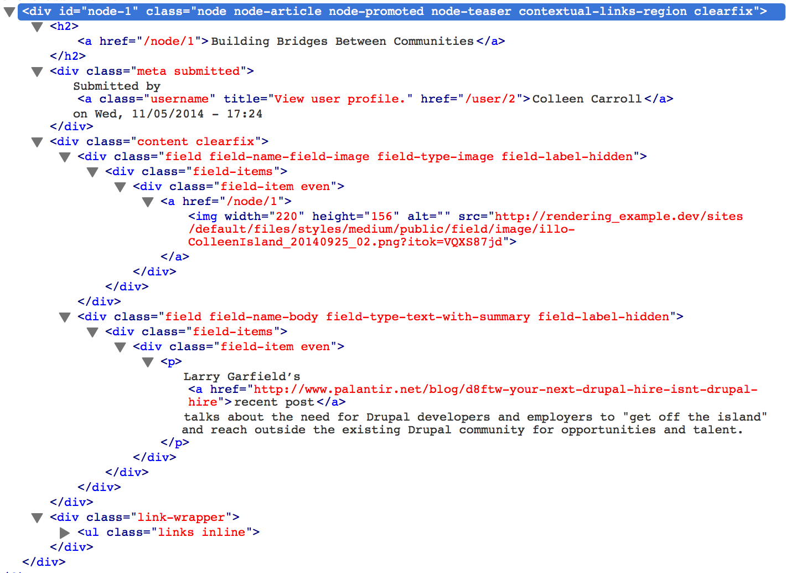
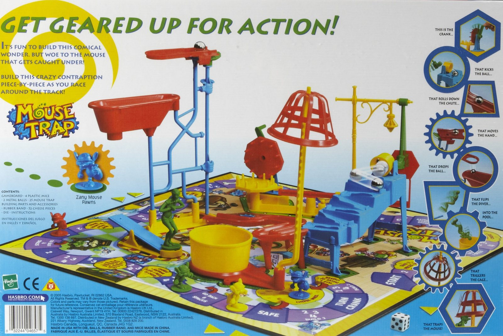

Rendering HTML with Drupal: Past, Present and Future
Presented by Steve Persch (@stevector)
Steve Persch
Senior Engineer and Team Lead at Palantir.net
@stevector on Twitter
“The future is already here – it's just not evenly distributed.”
What are we doing?
"Web programming is the science of coming up with increasingly complicated ways of concatenating strings."
The once and future theme()
theme_item_list()
|
|
The basic idea
-
Tell the theme system what you want to print
theme('item_list') -
Also pass in the content variables
theme('item_list', $variables) -
The theme system will then call:
theme_item_list($variables) -
Override that function if you want
mysitetheme_item_list($variables)
It gets complicated quickly
$node = node_load(123);
theme('node', $node);Drupal likes to expose data layers as CSS classes
The basic idea
-
Tell the theme system what you want to print
theme('node') -
Give it the node to be rendered
theme('node', array('node' => $node)) - The preprocess layer looks at the raw node and gets printable fields variables
-
Those variables get printed in the template
node.tpl.php -
Override with template suggestions like
node--blogpost.tpl.php
The PAST
"Sustainable Theming"
Sustainable Theming
An extensible design, a design tool kit that continues to evolve, without the help of a HTML/CSS developer is the ultimate goal; a design or theme that stays intact as you add new content and new layouts to your site.
The GIVENS of the PAST
GIVEN (in D5 era)
Your designs are JPGs
And doing anything in Drupal gives you a ton of HTML
GIVEN: Core names CSS classes by internal data structures
GIVEN (in D5 era)
No preprocess on theme functions
So CSS classes are harder to change
GIVEN (in D5 era)
Your only Build Modes (View Modes) are “full” and “teaser”
Use Views UI and CSS classes on body to change appearance
Drupal is not a build a template first system, its a install a module and theme it system. IMO the templates are there when you need to override something that just isn't working, not override it because you wish there was one [less] div.
Themers should do as much as possible using CSS and avoid touching template.php or the .tpl.php files unless it's absolutely necessary. The advantage of this approach is that it makes the theme more portable, more upgradable, and ultimately more maintainable
I think that people need to stop trying to fiddle with the HTML layer in Drupal. Its not worth it, its not that interesting, and everything can be done with CSS anyway, and should be.
What does this CSS look like
.field-field-headline
{
font-weight:bold;
}
Complete Coupling to Views and Field Module
.views-field-field-headline-value
{
font:normal 16px Georgia, "Times New Roman", "Bitstream Vera Serif", serif;
}Complete Coupling to Views and Field Module
.view-blog .views-row,
.view-CLIENTNAME-taxonomy-term .views-row,
.view-promoarticles .views-row,
.view-promoarticles-panel_pane_3 .views-row,
.view-data .views-row,
.view-news-summary .views-row
{
border-bottom:1px solid #999;
}IN A WORLD
where CSS is your API to the browser
- The more CSS selectors the better
- The more DIVs the better
- The longer the class names the better
- Long, multi-element selectors are very tempting
What are we doing?
Drupal Core
exposes each
internal data model layer
as a
wrapping HTML element.
We are making
Drupal elements
Look Like
the design
"To seem to be,
rather than to be"
The (Past-ish) PRESENT
Chasing Easy / Losing Simple
"Sustainable Building Blocks"
now instead of overriding the theme function for a field you write a new formatter that does just what you want. ... Your theme override trick has now become a well-encapsulated, portable, flexible building block that you can reuse anywhere on your site, or on your next site, or your next 12 sites.
Write more plugins
And speaking of views, one-off overrides are so old school. Instead of building everything off of list views and custom theming, build a new style plugin. Or a display plugin. Or an argument handler.
Why?
True, it's another API to learn (as if Drupal doesn't have enough already), but the result is a reusable building block that does just what you need in a clean, extensible fashion that can be mixed and matched with other reusable building blocks, both yours and someone else's.
What are we doing?
Are writing CSS
to make a View
Look Like
a slideshow?
Are we writing
a Display Plugin
to make a View
BE
a slideshow?
D7's complexity clouds that question

Modifying markup with tools from Core
- Preprocess in modules and themes
- Process in modules and themes
- theme hook suggestions for theme functions and templates
- Field Formatters
- hook_field_extra_fields
- Writing new theme functions
- Render arrays
- hook_node_load
And then there's Contrib
- Panels, Page Manager, Panels Everywhere, Mini Panels, Panelizer
- Display Suite layouts
- Views Display plugins
- Suppress unwanted divs with Fences
- Add View Modes
Rendering in Drupal can feel like ...
Or Maybe ...
WHAT ARE WE DOING?
Whatever feels easier
(Not simpler)
The "Sustainable Theming" mentality relies on the "themer" knowing how the theme system works.
Why do I call it the "sustainable" method? Well, because it involves patience, long-term planning and it truly involves getting your hands dirty with Drupal, getting to know its inner structure, even when it changes and annoys the crap out of you. I'd rather work with it than against it.
How many people know how this works?
The (future-ish) PRESENT
Make the markup match
Back to the Givens!
GIVEN (NOW)
The client wants a RESPONSIVE site
The designers must do some work in CSS
Responsive
GIVEN (NOW)
The designs are in HTML/CSS
We no longer want Drupal's HTML and CSS. We already have some.
GIVEN (NOW)
Our designers think in
Design Components
Those are a consistent starting point to dev/designer conversations
GIVEN (NOW)
Everybody wants a "living" style guide
Our job is now to make Drupal match the Design Components
Why didn't we do that before?
The "strip-it" method gives you incredible control over the theme and the output of the site, which is an awesome thing. However, it doesn't give you the ability to let a client add a new view to the site and have it follow the theme/style guide
How do you map Design Components to Drupal?
@todo Show before after markup- Panels, Page Manager, Panels Everywhere, Mini Panels, Panelizer
- Display Suite layouts
- Views Display plugins
- Suppress unwanted divs with Fences
- Add View Modes
Modifying markup with tools beyond core
- Define ideal markup in a style guide / prototype
- Map design objects to Panels layout and style plugins
- Display Suite layouts
- Views Display plugins
- Suppress unwanted divs with Fences
- Add View Modes
Panels is our go-to tool for mapping Design Components
Panels itself is a UI on top of hook_theme()
- Panels Everywhere for the
page.tpl.phplevel - Page Manager for the "main content" level
- Panelizer for View Modes
- Mini Panels for block level
The FUTURE
Clear Decoupling
GIVEN (now/future)
Headless, Headless, Headless, Headless, Headless, Headless, Headless, Headless, Headless, Headless, Headless, Headless.
In the session description I promised a dozen references to Headless Drupal
GIVEN (now/future)
Clients will see the value in decoupling
And will stay on on the same Drupal versions while re-doing the front end
GIVEN (now/future)
Front-end web practices are changing faster than those server-side
So we should look for common patterns
GIVEN (now/future)
Front-end web practices are changing faster than those server-side
So we should look for common patterns
Patterns in modern Front-end that Drupal will have to better accommodate
- Data Binding
- Encapsulation, Encapsulation, Encapsulation
- Cleaner Exension
You are moving to the future when...
- You can explain where you draw lines between data and presentation
- You name your Design Components independent of Drupal
- Your templates and functions are named after Design Components, not Drupal data structures
- You can make changes to front end code used by Drupal (CSS, templates, JS) outside of your Drupal
- With CSS from a static prototype
- With encapsulated JS
- With reusable templates
- You can imagine a Front End Developer on a Drupal project not knowing PHP
The PAST
The "PAST" Drupal front-end mentality accepts Drupal's preference to expose every internal layer through HTML elements and classes.
The PAST
The "PAST" Drupal front-end mentality makes the real site LOOK LIKE the designs
The Present
The present Drupal front-end mentality is one of MATCHING THE (important) MARKUP of the style guide / prototype
FUTURE
The "FUTURE" Drupal front-end mentality makes the real site BE the designs